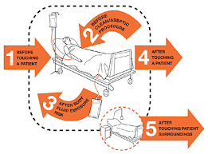
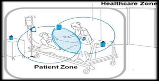

The WHO 5 Moments Framework
The WHO 5 Moments for Hand Hygiene is a globally recognised evidence-based model that identifies the five critical points during patient care activities at which hand hygiene must be performed to interrupt the transmission of healthcare-associated pathogens.
This framework was developed as part of the WHO's First Global Patient Safety Challenge — "Clean Care is Safer Care" — and has been adopted by hospitals worldwide, including those under the DOH guidelines in the Philippines.
The word "moment" is intentional. It refers to a specific point in time and space — directly before or after a contact — not just a general suggestion to wash hands frequently throughout the day.

The five moments are defined relative to the patient zone — the space immediately surrounding the patient that includes the patient and their immediate environment (bed, bedside table, medical equipment in contact with the patient).
Moments 1 & 2 — Before Patient Contact
-
1Before touching a patient Clean your hands before touching the patient when approaching them. This protects the patient against colonisation and infection from harmful germs on your hands.
This moment applies whenever you enter the patient zone and make physical contact with the patient — even if the contact is a simple greeting handshake or pulse check. The risk is outward: your hands carry environmental germs to the patient.
Taking a pulse, assisting a patient to sit up, performing a physical assessment, applying a blood pressure cuff, or touching the patient's skin to reposition them.
-
2Before a clean or aseptic procedure Clean your hands immediately before performing a clean or aseptic task. This protects the patient against microorganisms — including the patient's own flora — from entering their body.
This moment is critical because it precedes a high-risk activity. Even if hands were cleaned at Moment 1, any contact with the patient environment between then and the procedure requires a repeat hand hygiene action at Moment 2.
Injection / IV Line
Any injection, IV insertion, or catheter manipulation requires Moment 2 compliance immediately prior.
Wound Care
Dressing changes, wound irrigation, and suture removal are all aseptic procedures requiring clean hands.
Moment 3 — After Body Fluid Exposure
-
3After body fluid exposure risk Clean your hands after an exposure risk to body fluids (and after glove removal). This protects you and the healthcare environment from harmful patient germs.
Moment 3 is the most urgent of all five moments. It must be performed immediately after any contact with body fluids, mucous membranes, non-intact skin, or wound dressings — even when gloves were worn.
Gloves can have micro-perforations and may be contaminated during removal. Hand hygiene after glove removal is mandatory, not optional.
| Body Fluid | Moment 3 Required? |
|---|---|
| Blood | ✅ Always |
| Urine / Faeces | ✅ Always |
| Saliva / Sputum | ✅ Always |
| Wound exudate | ✅ Always |
| Vomit | ✅ Always |
| Cerebrospinal fluid | ✅ Always |
Moments 4 & 5 — After Patient Contact
-
4After touching a patient Clean your hands after touching the patient and after leaving the patient zone. This protects you and the healthcare environment from harmful patient germs.
-
5After touching patient surroundings Clean your hands after touching any object or furniture in the patient's immediate surroundings, when leaving — even if the patient was not touched.
Moments 4 and 5 are often confused because they both occur after leaving the patient zone. The key distinction is that Moment 4 applies when the patient was directly touched, while Moment 5 applies even when only the patient's environment (e.g., adjusting an IV stand, writing on a whiteboard in the room) was contacted.

Compliance & Common Challenges
Despite widespread education, global hand hygiene compliance among healthcare workers averages between 38–50%. Understanding why compliance fails is as important as knowing the technique itself.
Time Pressure
High patient-to-nurse ratios and busy shifts make it tempting to skip moments, especially low-risk-seeming ones.
Skin Irritation
Repeated handwashing causes dryness and dermatitis, which can discourage compliance over long shifts.
Dispenser Placement
If ABHR dispensers are not within arm's reach at the point of care, compliance drops significantly.
Perceived Low Risk
Workers may underestimate transmission risk for "minor" contacts like touching bed linen or checking a chart.
No moment is optional. Each of the 5 Moments has been specifically validated through epidemiological evidence to represent a genuine transmission risk if skipped.